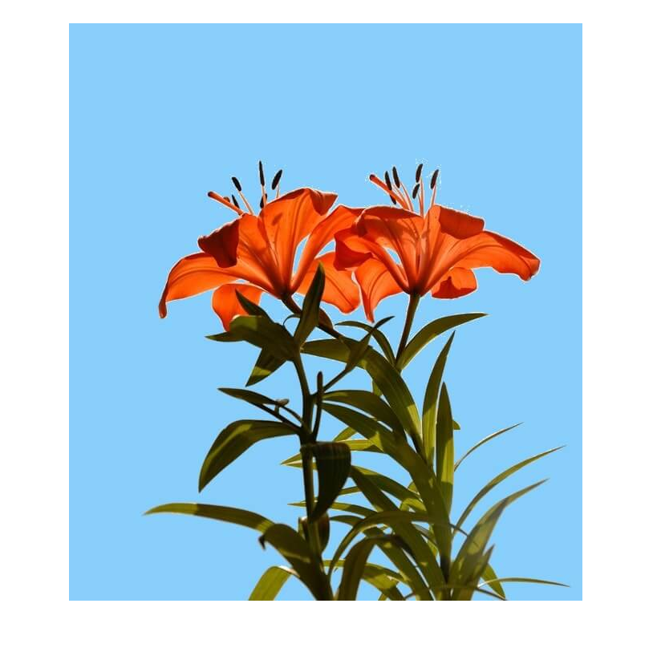
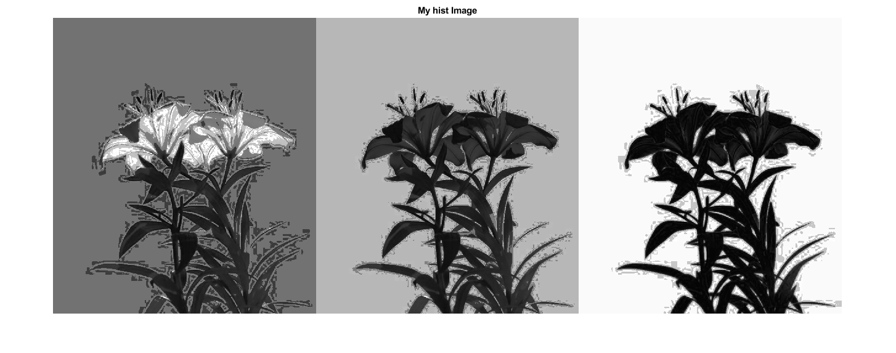

close all
clear all
clc
I = imread('C:\Users\student\LAB\anirudh\red-lilies-with-changed-background.jpg');
Igr=I(:,:,1);
imshow(Igr)
[r,c] = size(I);
imshow(I);
blank = uint8(zeros(r,c));
n = r*c;
f = zeros(256,1);
pdf = zeros(256,1);
cdf = zeros(256,1);
out = zeros(256,1);
cum = zeros(256,1);
for i = 1:r
for j = 1:c
value = I(i,j);
f(value+1) = f(value+1)+1;
pdf(value+1) = f(value+1)/n;
end
end
sum = 0;
L = 255;
for i = 1:size(pdf);
sum = sum + f(i);
cum(i) = sum;
cdf(i) = cum(i)/n;
out(i) = round(cdf(i)*L);
end
for i = 1:r;
for j = 1:c;
blank(i,j) = out(I(i,j)+1);
end
end
figure, histogram(I); title('My Image funtion Histogram');
figure,imshow(I); title('My original Image');
figure,imshow(blank); title('My hist Image');
figure, histogram(blank); title('My funtion Histogram');



